1. 비회원 랜딩 landing일치
상단 브랜드, 제목·설명·접힘 버튼, 워드맵 프리뷰, 선언 문구, 주·보조 CTA, 로그인과 하단탭의 위계·폭·간격이 같은 화면으로 보입니다.
승인 시안 390px
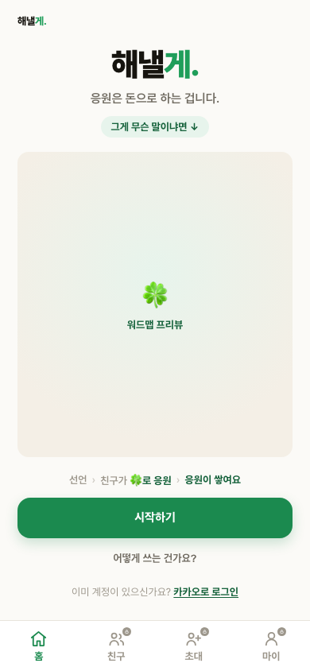
로컬 구현 390px
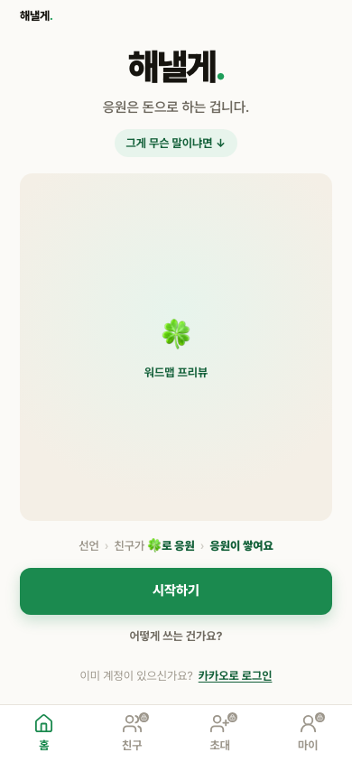
2. 공개 목표 goalpublic불일치
이름·응원 수·워드맵 단어는 제외했습니다. 구현은 상단 브랜드와 로그인 문구가 한 줄로 합쳐졌고, 워드맵 아래 추가 펼침 카드와 준비 중 CTA가 노출돼 승인 시안의 정보 위계·상태와 다릅니다.
승인 시안 390px
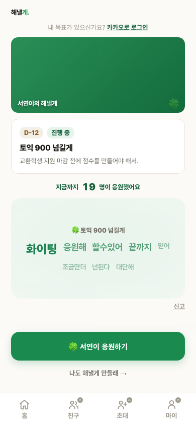
로컬 구현 390px
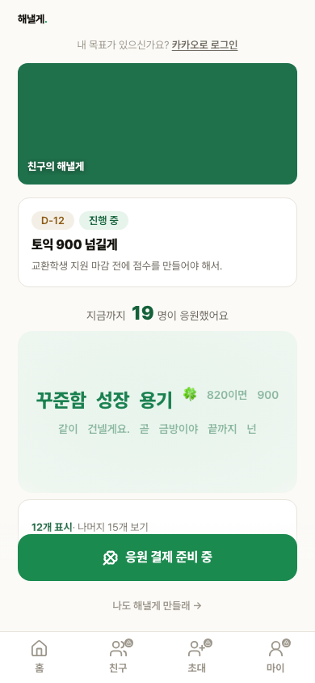
3. 마이페이지 mypage일치
아바타·이름·메시지 값은 제외했습니다. 헤더, 프로필 카드, 활동 카드 2개, 응원 탭, 응원 행 3개, 안내 문구와 환경설정 진입의 순서·카드 폭·행 간격·하단탭이 같은 구조로 보입니다.
승인 시안 390px

로컬 구현 390px
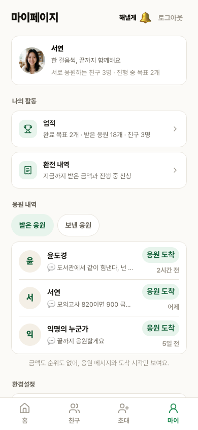
4. 초대 생성 connect불일치
인물 자체는 제외했습니다. 구현의 본문 전체가 승인 시안보다 위에서 시작하고, 사진 crop·카카오 미리보기의 아바타 비율·카드 내부 여백·하단 CTA 아이콘 스타일이 다릅니다.
승인 시안 390px
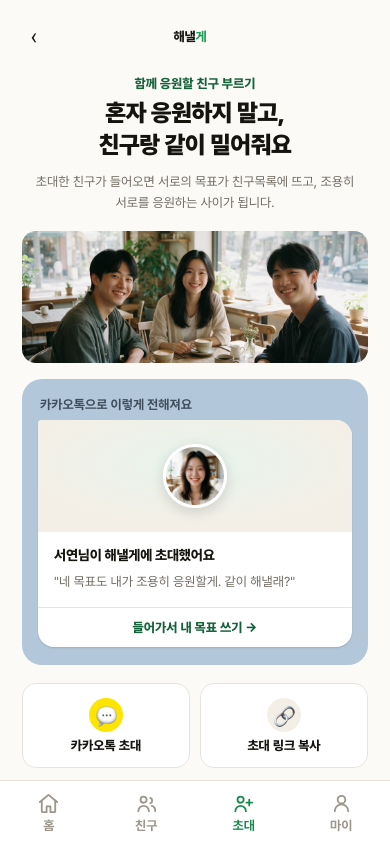
로컬 구현 390px
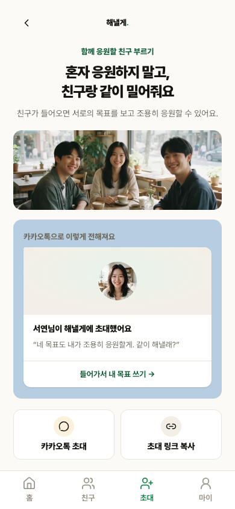
5. 초대 수락 inviteaccept불일치
초대한 사람과 목표 문구 값은 제외했습니다. cover·아바타 이후 제목·설명·CTA의 수직 간격이 다르고, 구현 CTA가 승인 시안보다 크게 아래에 배치됩니다.
승인 시안 390px

로컬 구현 390px
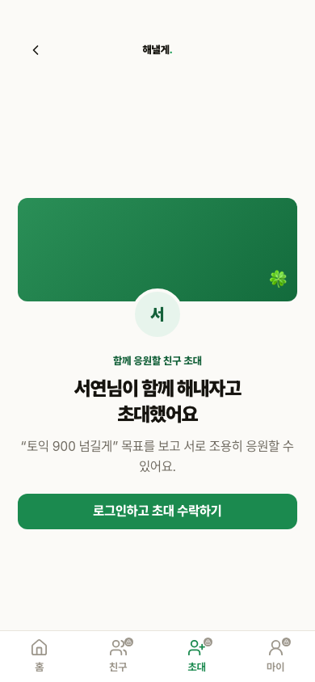
6. 친구 목록 friends불일치
친구 순서·이름·목표·근황 값은 제외했습니다. 구현의 행 높이가 균일하지 않고 두 번째 행에 별도 목표 pill이 추가돼, 승인 시안의 동일 높이 3행·진행 막대·메타데이터 배치와 다릅니다.
승인 시안 390px
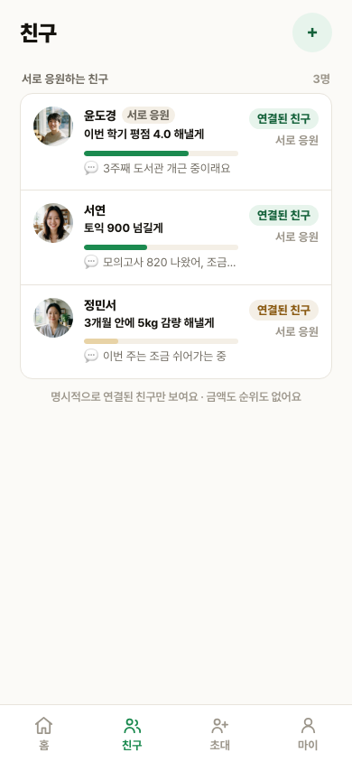
로컬 구현 390px
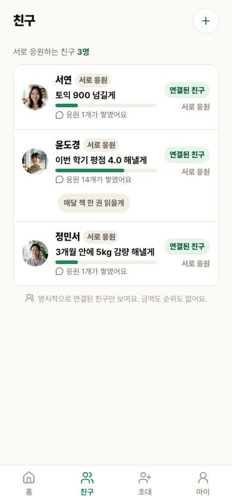
7. 친구 상세 belong불일치
친구·사진·응원 수·근황 문구 값은 제외했습니다. 응원자 묶음이 구현에서는 문자 원형으로 바뀌었고, 근황 카드 이후 수직 간격과 마지막 재초대 카드의 테두리·아이콘·높이가 승인 시안과 다릅니다.
승인 시안 390px

로컬 구현 390px
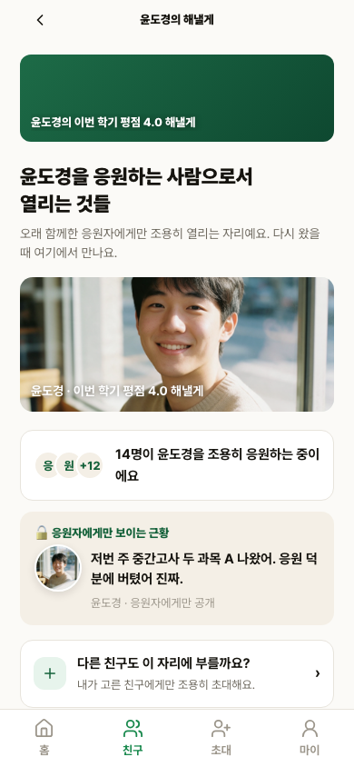